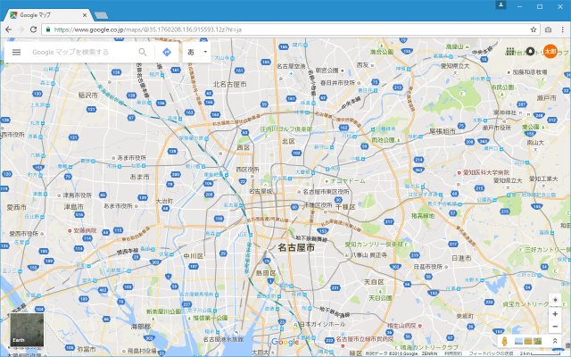
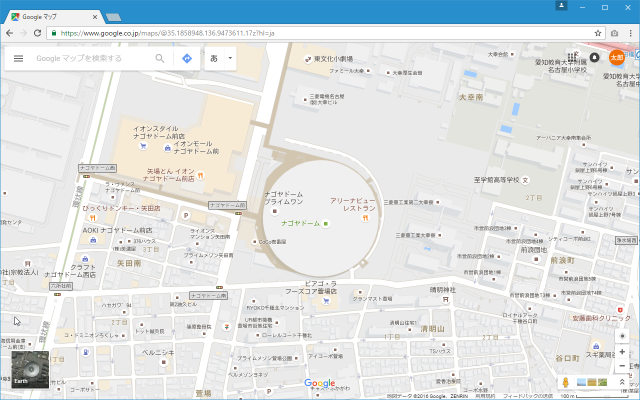
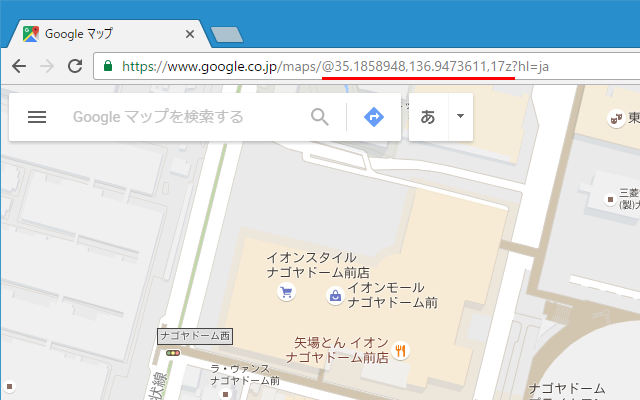
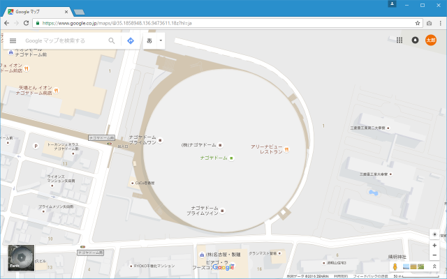
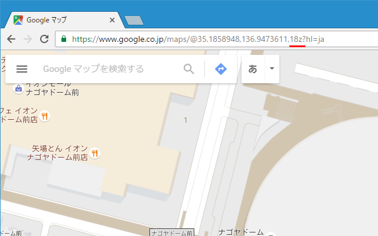
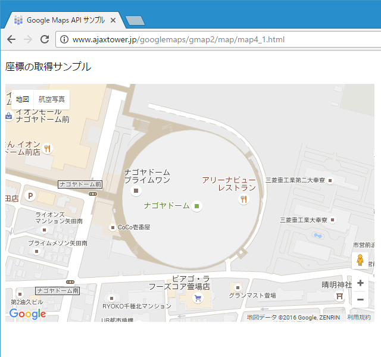
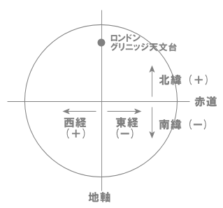

[参考]Googleマップを使って座標(緯度と経度)とズームレベルを取得する
Google Maps APIを使う時には地図を表示する位置やマーカーや情報ウィンドウを設置する位置など座標の情報が必要になることが多いです。例えば富士山を地図で表示するには富士山の座標が必要となります。ここではGoogleマップを使って特定の場所の座標(と合わせてズームレベル)を調べる方法を解説します。
1.緯度と経度を取得する
2.サンプルコード
3.百分率表記と度分秒表記とは
緯度と経度を取得する
任意の場所の緯度と経度を調べる方法はいくつかありますが、ここではGoogle マップを使って調べる方法を確認します。まずGoole マップ上で緯度と経度を取得したい場所が地図に表示されるように移動して下さい。

座標を調べたい場所が地図の中央に表示されるように地図を移動して下さい。

ブラウザのURLを見て下さい。GoogleマップのURLは表示されている地図の中心の座標とズームレベルで構成されています。

URLの形式は次の通りです。
https://www.google.co.jp/maps/@緯度,経度,ズームレベルz?hl=ja
今は次のように表示されており、座標が(35.1858948,136.9473611)、地図のズームレベルは17であることが分かります。
https://www.google.co.jp/maps/@35.1858948,136.9473611,17z?hl=ja
試しに地図の位置は変えずに地図をズームインしてより詳細な地図を表示してみて下さい。

URLを見てみると緯度と経度は変わらずズームレベルの値だけが変わっていることが分かります。

このようにGoogleマップを使用することで、任意の地点の座標を簡単に調べることができます。
サンプルコード
それでは先ほど取得した座標とズームレベルを指定して地図を表示する簡単なサンプルを作成し、取得した座標が正しいかどうかを確認してみます。
function initMap() {
var opts = {
zoom: 17,
center: new google.maps.LatLng(35.1858948,136.9473611)
};
var map = new google.maps.Map(document.getElementById("map"), opts);
}
<!DOCTYPE html>
<html lang="ja">
<head>
<meta charset="utf-8">
<title>Google Maps API サンプル</title>
</head>
<body>
<p>座標の取得サンプル</p>
<div id="map" style="width:620px; height:400px"></div>
<script type="text/javascript" src="code4_1.js">
</script>
<script async defer
src="https://maps.googleapis.com/maps/api/js?key=APIKey&callback=initMap">
</script>
</body>
</html>
ブラウザで上記ページを開くと次のように表示されます。

先ほど取得した座標とズームレベルを設定して地図を表示してみると、Googleマップで表示した場所と同じ場所をGoogle Maps APIを使って表示することができました。
百分率表記と度分秒表記とは
最後に緯度と経度に関する参考情報です。Google Maps APIで緯度と経度を指定する時には百分率表記を使いますが、他に度分秒表記という「東経130度20分35秒」などのような記述方法もよく使われます。この度分秒表記から百分率表記への変換方法は次の通りです。
百分率表記 ＝ 度 ＋ (分／60) ＋ (秒／3600)
例えば「東経130度20分35秒」は下記のようになります。
百分率表記 ＝ 度 ＋ (分／60) ＋ (秒／3600)
＝ 130 ＋ (20／60) ＋ (35／3600)
＝ 130.3431
また経度と緯度には、「東経」「西経」と「北緯」「南緯」という区分があります。

経度に関してはロンドンのグリニッジ天文台を通過する南北の線を基準として、東側を「東経」、西側を「西経」となります。それぞれ0～180度の値を取ります。また緯度に関しては赤道を軸として、北半球を「北緯」、南半球を「南緯」となります。それぞれ0～90度の値を取ります。
( Written by Tatsuo Ikura )

著者 / TATSUO IKURA
初心者～中級者の方を対象としたプログラミング方法や開発環境の構築の解説を行うサイトの運営を行っています。